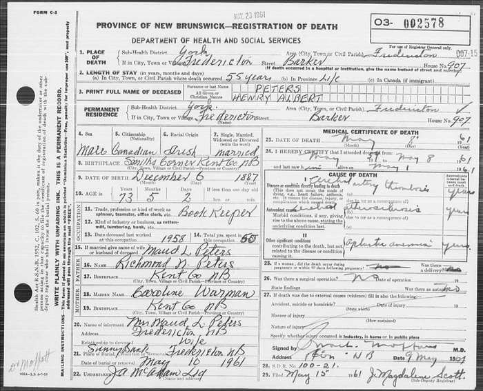
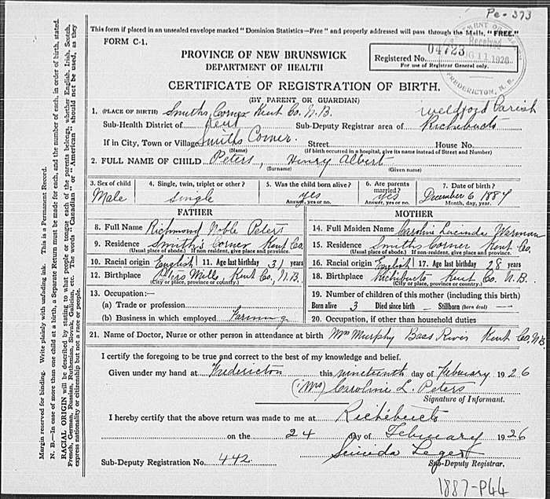
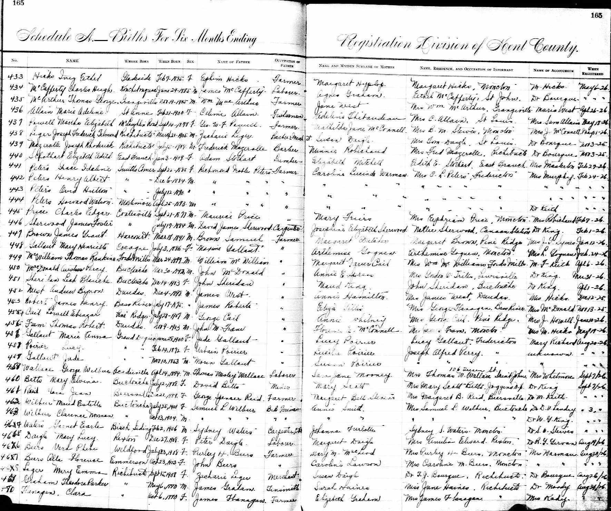
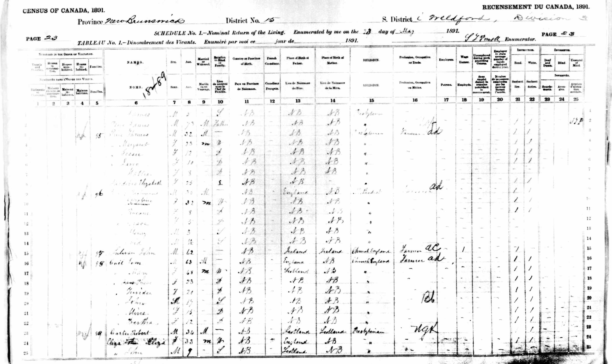
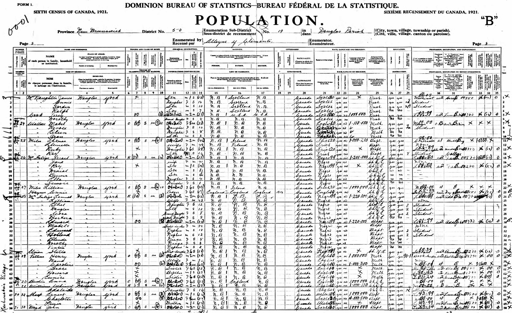
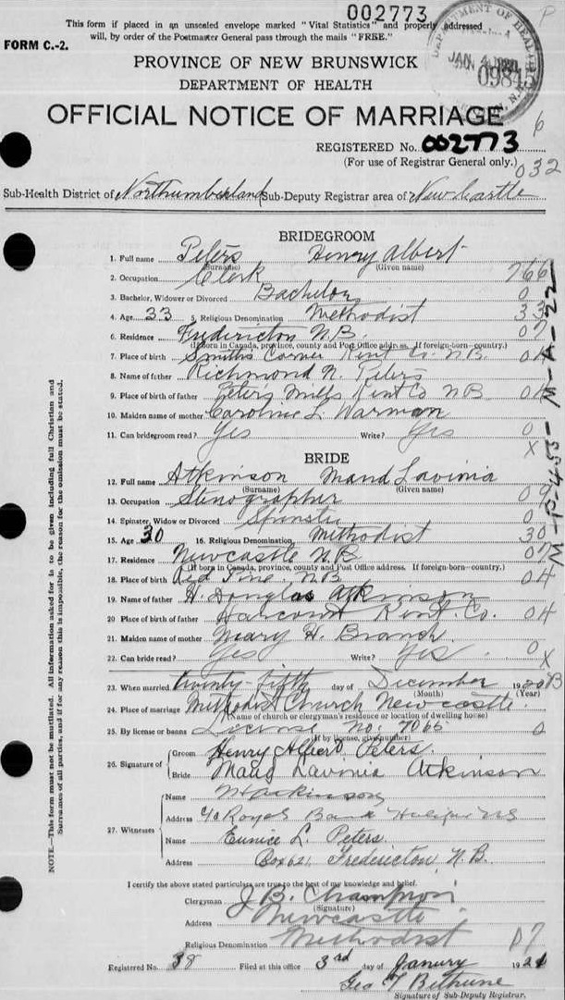
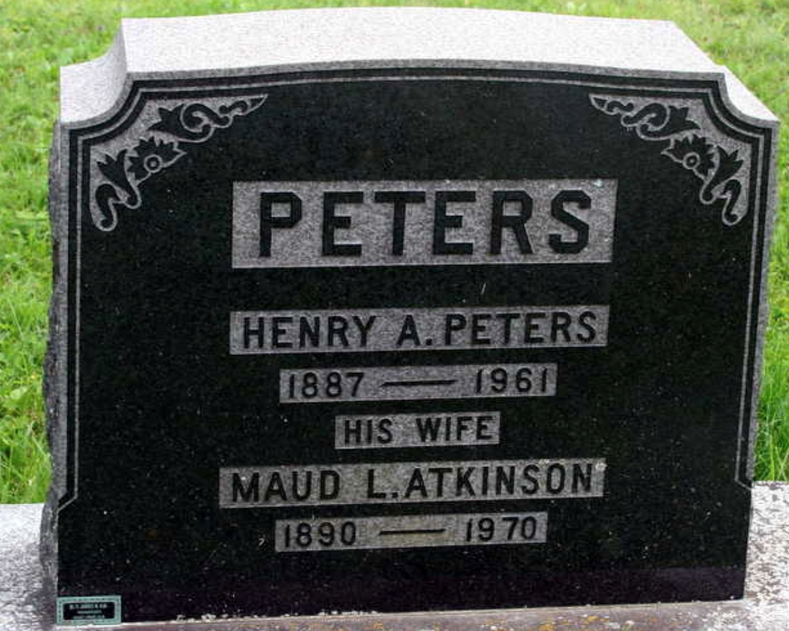

Henry Albert Peters 1887 - 1961
[ Home ] | [ Calendar ] | [ Surnames Index ] | [ Family History ]A bookkeeper and the 3rd of 7 children of Richmond Peters (a farmer) and Caroline Warman, Henry Peters, the third cousin twice-removed on the father's side of Nigel Horne, was born in Smiths Corner, Kent, New Brunswick, Canada on Dec 6, 18871,2,3,4,5 and married his second cousin once-removed on his father's side Maud Atkinson (a stenographer with whom he had 1 child, Margory Elaine) at Methodist Church, Newcastle, Northumberland, New Brunswick, Canada.
Throughout his life, Henry lived in several places: in Weldford, Kent, New Brunswick on May 28, 18911; in York, New Brunswick in 19016; and in Douglas, York, New Brunswick on Jun 1, 19212.
He died on May 8, 1961 at 907 Barker Street, Fredericton, York, New Brunswick4,5 (cerebral artery thrombosis) and was buried at Sunny Bank Cemetery, McEvoy Street, Fredericton after May 8, 19614,5.
Parents
- Richmond Noble was born on May 9, 1856
- Caroline Lucinda was born on Mar 17, 1859
Children
- Margory Elaine was born on Aug 19, 1926
Citations
- 1891 Census of Canada Ancestry.com Operations Inc (Marital Status: Single; Relation to Head of House: Son)
- 1921 Census of Canada Ancestry.com Operations Inc (Marital Status: Married; Relation to Head of House: Head)
- Canada Census 1891 - Findmypast
- Canada, Find A Grave Index, 1600s-Current Ancestry.com Operations, Inc.
- Web: International, Find A Grave Index Ancestry.com Operations, Inc.
- Canada Census 1901 - Findmypast (was the son of the head of the household)
Media
Henry Albert Peters - death certificate

Henry Albert Peters - birth certificate

Henry Albert Peters - birth

1891 Canada Census

1921 Canada Census

Henry Peters - Maud Atkinson - marriage certificat

1901 Census Canada

Henry Peters - Maud Atkinson - gravestone

Canada Census 1901 - CAN/CENSUS/1901/00742759
Family Tree

Generated by Ged2Site. Last updated on Jul 20, 2025